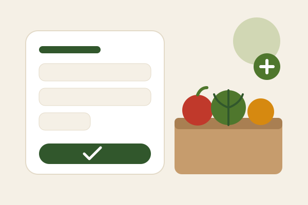
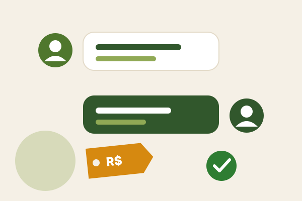
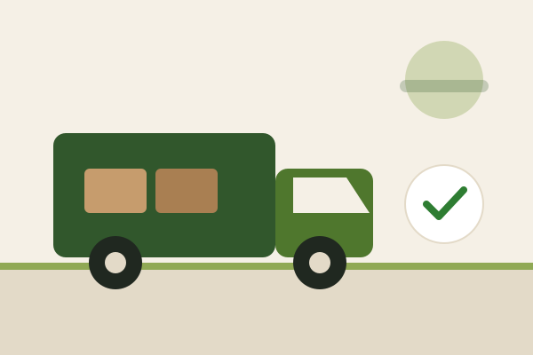

Uma ponte digital entre o campo e o mercado.
O MarketPlace Rural permite que produtores rurais divulguem seus produtos, recebam pedidos e negociem diretamente com compradores. A proposta é reduzir intermediários, valorizar o produtor e tornar o processo de compra mais transparente.
Recursos da plataforma
Painel do produtor
Cadastro de produtos, controle de estoque, preços e pedidos.
Vitrine de produtos
Produtos organizados por categoria, região e disponibilidade.
Negociação direta
Comunicação entre produtor e comprador sem intermediários.
Gestão de pedidos
Acompanhamento dos pedidos desde a compra até a entrega.
Como funciona

Cadastre seus produtos
O produtor informa o que tem, o preço e a quantidade em estoque.

Negocie direto
Comprador e produtor combinam valores e prazos, sem intermediários.

Receba o pedido
Acompanhe cada pedido até a entrega e confirme o recebimento.
Produtos em destaque

Frutas selecionadas
Direto de produtores locais.

Hortaliças frescas
Produtos frescos para mercados e restaurantes.

Grãos e cereais
Compra em volume com negociação direta.
Feito para quem vive o campo e o comércio.
Transforme a forma de vender no campo.
Acesse a plataforma e conheça a proposta do marketplace rural.
Entrar na plataforma